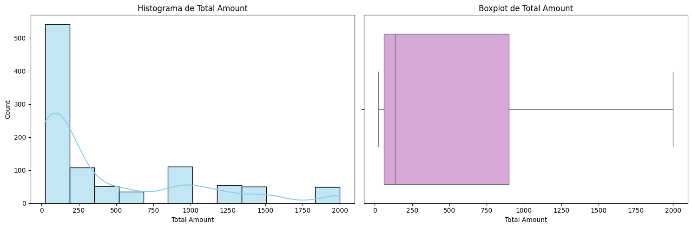
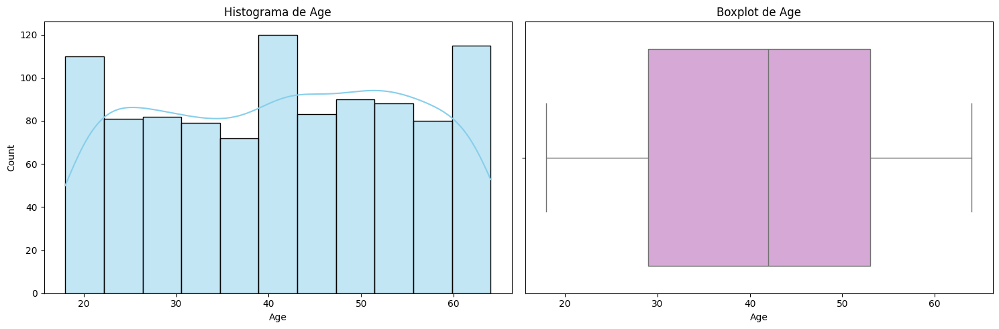
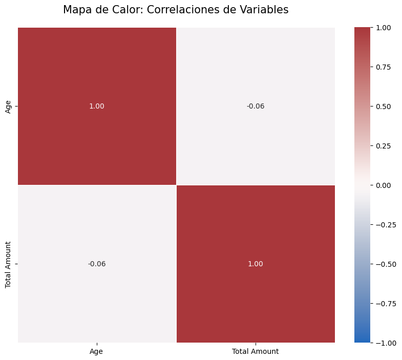
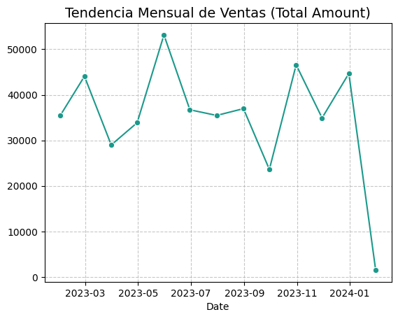
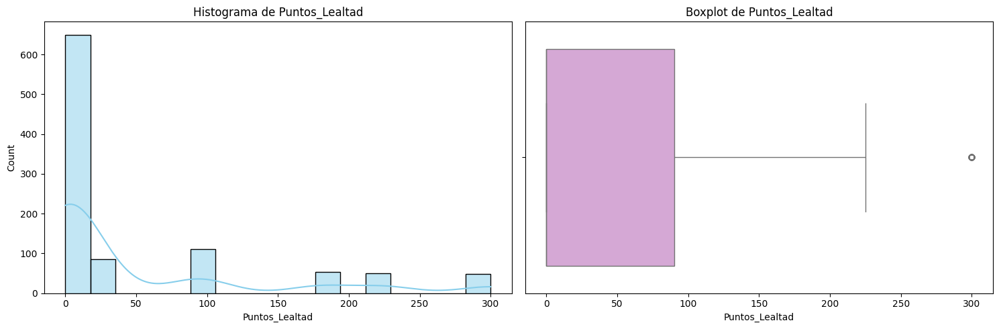
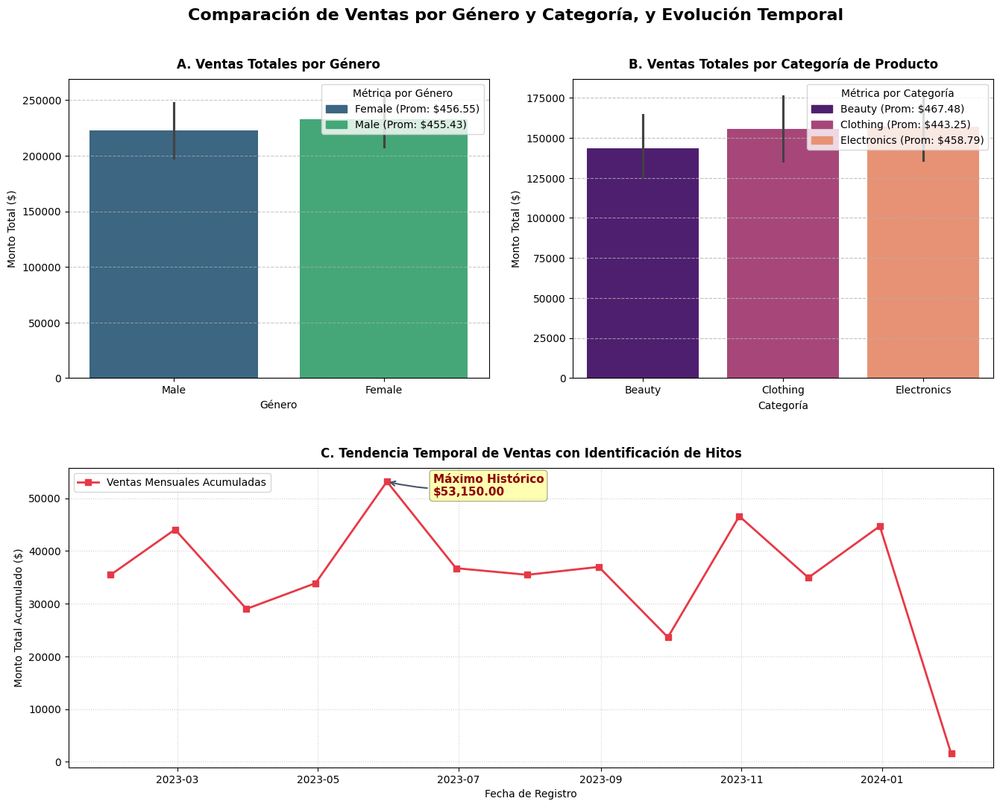

Modelamiento Exploratorio, Curaduría Estacional y Proyección Financiera
Data Scientist: Iván Cortés Venegas. | Fase: Entrega Síntesis de Proyecto I | Versión: Tag v1.0.0
El ecosistema retail demanda una transición desde la gestión reactiva hacia la **planificación predictiva**. Este proyecto aborda el ciclo completo de análisis exploratorio para responder a la pregunta fundamental del negocio: **¿Cómo escalar la operación actual de forma segura y mitigar el riesgo logístico?**
Suma Total de Ventas Históricas
• Ticket Promedio General: $456.00 por transacción.
• Mediana del Gasto: $135.00.
• Techo Transaccional: $2,000.00.
| Dimensión Analítica | Tipo de Variable | Estado de Integridad (Data Cleansing) | Impacto en el Modelo Predictivo |
|---|---|---|---|
| Temporal (Date) | Datetime64 | 0% Nulos. Tipos corregidos para habilitar indexación cronológica. | Permite agrupar por remuestreo mensual (*Resampling*). |
| Demográfica (Gender / Age) | Nominal / Entero | Sin registros duplicados. Rango etario controlado (IQR: 29-53 años). | Define la transversalidad o necesidad de micro-segmentación. |
| Unidad de Negocio (Category) | Object / Categoría | Consistencia de texto normalizada. 3 categorías únicas. | Aísla el rendimiento operativo por línea de productos. |
| Financiera (Total Amount) | Float64 | Nulos imputados. Eliminación estricta de redundancias. | Variable objetivo (*Target*) para proyecciones. |
El comportamiento de los montos totales de venta exhibe una estructura asimétrica fundamental para la toma de decisiones.


Uno de los hallazgos más contundentes del proyecto surge al cruzar la edad biológica del cliente con el monto de su compra.
Para fundamentar el modelo de predicción, se evaluó la interdependencia de todas las variables numéricas mediante un mapa de calor.

| Categoría de Producto | Total Ingresos Acumulados | Promedio de Venta Diaria | Masa Temporal (Días con Ventas) | Liderazgo Operativo |
|---|---|---|---|---|
| Electronics | $156,905.00 | $716.46 | 219 días | Máximo en Ventas |
| Clothing | $155,580.00 | $670.60 | 232 días | Máxima Frecuencia |
| Beauty | $143,515.00 | $703.50 | 204 días | Menor Volumen |

El remuestreo mensual (*Resampling*) permitió limpiar el ruido transaccional diario para revelar los ciclos de la demanda.
El programa de lealtad actúa como una palanca financiera directa sobre el valor del tiempo de vida del cliente (CLV).


Este gráfico consolida la masa de ingresos por género y categoría mediante estimadores de suma. el ticket promedio de cada categoría se muestra en las leyendas
SÍ. El proyecto cumplió exitosamente la fase exploratoria y de ingeniería de características (*Feature Engineering*) requerida para habilitar modelos de proyección financiera confiables.
Viabilidad de la Proyección Doble de $912,000.00:
El objetivo de duplicar el ingreso es científicamente viable si el negocio implementa las reglas derivadas del EDA: capturar el nicho de alto gasto unitario (**Jóvenes en Beauty**), blindar el stock de la categoría principal (**Adultos en Clothing**) y anticipar la cadena de suministro en base al pico estacional de mayo.
Atención VIP a Outliers: Activar protocolos de fidelización inmediata para transacciones atípicas (desviación positiva de +$1,556.75), ya que representan el segmento corporativo de alto valor.
Control de Descuentos: Auditar los productos con desviaciones negativas severas (hasta -$442.48) para identificar si sufren de rebajas agresivas innecesarias que sacrifican rentabilidad.
Upselling de Caja: Explotar el incentivo escalonado del programa de puntos para motivar a los clientes cuya compra promedio ronda los $456.00 a llevar productos adicionales y alcanzar los niveles VIP.
Análisis y Predicción de Ventas Retail
Icortesve
tag: v1.0.0 (Stable)
Iván Cortés V. — 2026